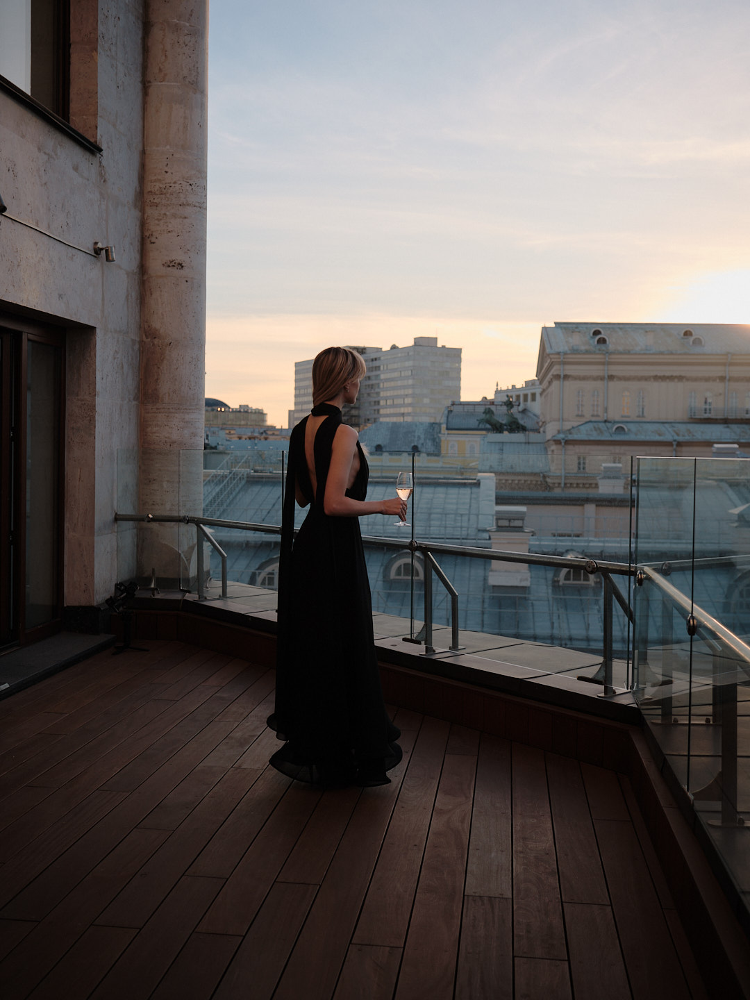

Поговорим
о вашем месте.
Не обязательно приходить с готовым техническим заданием. Расскажите, что хочется показать и для чего нужны материалы. Мы предложим, с какой истории начать.
hi@aemuse.me Или позвоните: +7 963 637 46 46Что можно написать в первом письме
Как называется ваше место и где оно находится.
Какие материалы нужны сейчас: фото, фильм, короткие ролики или всё вместе.
Где вы планируете их показывать и есть ли желаемые даты съёмки.
Если пока знаете только одно — что текущие фотографии не передают ваше ощущение от места — этого уже достаточно для начала разговора.